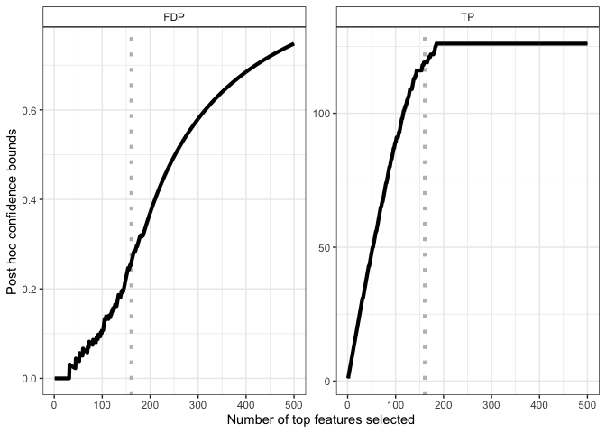

The goal of sansSouci is to perform post hoc inference: in a multiple testing context, sansSouci provides statistical guarantees on possibly user-defined and/or data-driven sets of hypotheses.
Typical use cases include:
- Differential gene expression studies in genomics: see differential expression vignette and run volcano plot shiny app
- fMRI studies in neuroimaging: see fMRI vignette.
In both cases, the permutation-based post hoc inference methods implemented in the SansSouci package outperform classical post hoc bounds based on probabilistic inequalities.
Example: differential analysis
We briefly illustrate the case of differential gene expression study (see dedicated vignette for more information). We start by creating an object of class SansSouci from gene expression data available from the sansSouci.data package,
library("sansSouci")
#> remotes::install_github("pneuvial/sanssouci.data")
data(expr_ALL, package = "sansSouci.data")
groups <- ifelse(colnames(expr_ALL) == "BCR/ABL", 1, 0) # map to 0/1
obj <- SansSouci(Y = expr_ALL, groups = groups)Then we fit the method by with B=1000 permutations, and with a target risk alpha = 0.1.
res <- fit(obj, alpha = 0.1, B = 1000)Output 1 - Post hoc bound for a subset of genes
Let us assume that we are interested in genes with a p-value below 10 − 3.
The method ensures with 1 − α = 90% confidence that there are at least 119 truly differentially expressed genes (true positives, TP) among these 161 genes, corresponding to a false discovery proportion (FDP) less than 0.27.
Output 2 - Confidence curves for “top-k” feature lists
Another output of the method is the following 1 − α-level confidence curve on FDP (left panel) and corresponding TP (right panel) in “top-k” gene lists.
library("ggplot2")
plot(res, xmax = 500) +
geom_vline(xintercept = length(S),
color = "gray", linetype = "dotted", size = 1.5) +
geom_line(size = 1.5)
Output 3 - Volcano plots
A more refined user selection is obtained by selecting genes based on both significance (here, a FDR-adjusted p-value below 0.05) and fold change (here, fold change above 0.3). Such selections are generally represented by volcano plots:
volcanoPlot(res, q = 0.05, r = 0.3, ylim = c(0, 6))Importantly, multiple such selections can be made without compromising the validity of the bounds. The IIDEA shiny app makes it possible to perform such selections interactively and without programming.
Installation
You can install the development version from GitHub with:
# install.packages("devtools")
remotes::install_github("pneuvial/sanssouci")